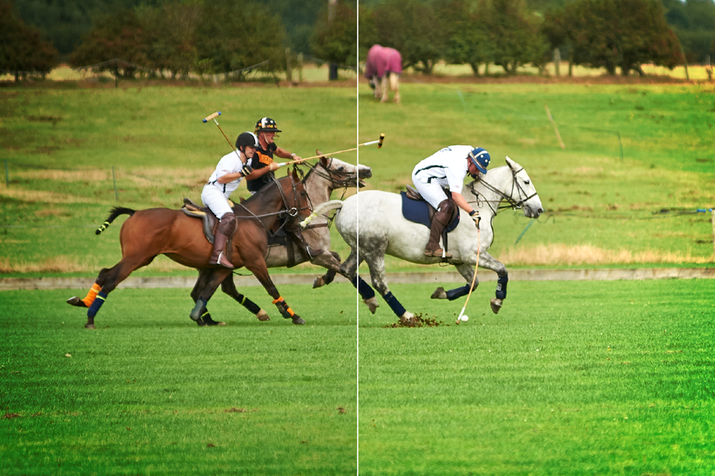
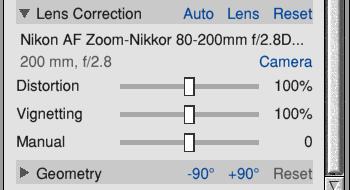
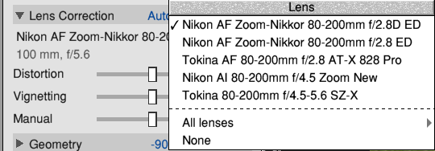
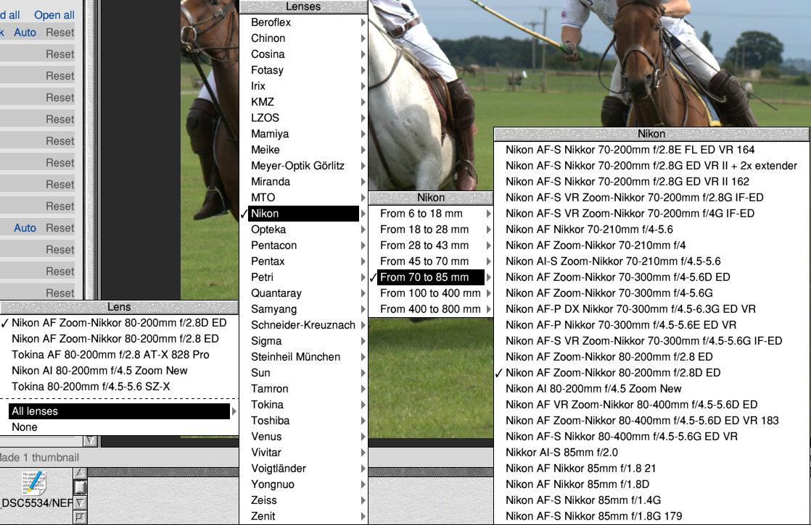
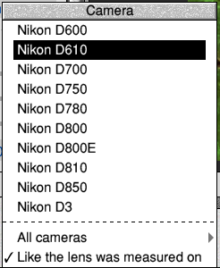
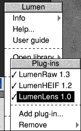

Introduction
No lens is perfect. Straight lines near the edges of a photo bow outwards (barrel distortion, usual in wide-angle lenses and zooms at their short end) or inwards (pincushion, in many zooms at their long end). The corners come out darker than the middle (vignetting), most of all with the lens wide open. And edges towards the corners get thin red and blue fringes (lateral chromatic aberration), because the lens bends red and blue light by slightly different amounts.
All three can be undone, if you know how the lens does them. Photographers working with the lensfun project have measured hundreds of lenses, at each of their focal lengths and apertures, and published the results as a free database. LumenLens brings that database to Lumen, and Lumen's Lens Correction uses it.
LumenLens is a plug-in so that you can keep Lumen as light or as heavy as you like: without it, Lumen is about 1 MB smaller, and Lens Correction still corrects distortion by hand.
About this guide
This guide is about the plug-in and Lens Correction. Everything else about Lumen is in the Lumen User Guide: choose User guide from the menu on Lumen's icon bar icon. The pictures are screenshots of Lumen 0.0.38 with LumenLens 1.0 on RISC OS 5. The photos are the author's own, taken with a Nikon D700 and an 80-200mm f/2.8 lens.
The boxes in this guide
Part I: Getting StartedWhat the plug-in is, and installing it
1 What LumenLens does
LumenLens is a plug-in of a different kind from LumenRaw and LumenHEIF: it has no program, only data. It's one text file, Lenses, holding:
- 1,533 lenses: each one's name, the mounts it fits, and its measurements: distortion and lateral colour at each focal length, vignetting at each focal length and aperture.
- 1,059 cameras: each one's mount (which lenses fit it) and the size of its sensor (its crop factor).
Lumen reads it itself, the first time a photo needs it. From the lens's measurements Lumen works out a profile for the photo, for the focal length and aperture it was taken at, and corrects the photo with it.
What LumenLens doesn't do
- It never changes your photos' files. Like all Lumen's adjustments, the correction is part of the photo's recipe, and can be taken away again.
- It doesn't turn a fisheye photo into an ordinary one: a fisheye lens's profile corrects how far it is from a perfect fisheye, and its vignetting and colour, but the photo stays a fisheye.
- It doesn't know every lens. If yours isn't there, Manual still corrects distortion by hand (Chapter 6).
2 Installing LumenLens
What you need
- Lumen 0.0.38 or later. Earlier versions have no Lens Correction.
- For camera raw files, LumenRaw 1.3 or later is best: it passes on what the camera's own notes say about the lens, which many cameras (Nikons especially) don't put in the EXIF.
- About 1 MB of disc space, and a little more memory for Lumen once it has read the database.
Installing
Install the LumenLens package with PackMan. Or unzip LumenLens-1.0.zip, Shift-double-click the !Lumen in it to open it, open Plugins, and drag the Lens directory into Lumen's Add plug-in window (Plug-ins → Add plug-in... on the icon bar menu). Lumen copies it to !Lumen.Plugins.Lens and uses it straight away.
Once it's there, the Lens Correction group in the Adjustments tab has two links, Auto and Lens, beside its Reset.
Part II: Correcting Your PhotosAuto, the Lens and Camera menus, and the sliders
3 Auto: finding the lens
Open a photo in the Viewer, go to the Adjustments tab, open Lens Correction and click Auto. Lumen finds the photo's lens and corrects the photo.

To find the lens, Lumen looks at what the camera wrote in the photo's file:
- The camera (make and model): its mount says which lenses could have been on it, and its sensor size how much of the lens's picture it saw.
- The lens's name, when the camera writes one (most newer cameras do). Lumen compares it with the names in the database in words and numbers, so "EF24-105mm f/4L IS USM" is found as "Canon EF 24-105mm f/4L IS USM".
- The lens's focal lengths and widest aperture (80-200 mm, f/2.8, say), when there's no name. For raw files LumenRaw 1.3 finds these in the camera's own notes.
- The focal length and aperture the photo was taken at, to work out the profile.
A compact camera's lens can't be changed, so its profile is found from the camera alone.
If Lumen can't tell which lens it was (no lens details in the file, or two lenses as likely as each other), it says so: choose the lens from the Lens menu (Chapter 4).
4 Choosing the lens yourself
Lens opens a menu of lenses. At the top are the likeliest: lenses that fit the photo's camera and have its focal length, the most likely first. A tick shows the one in use.

All lenses has every lens that fits the camera, by maker. A maker with many lenses has them in parts, by the shortest focal length: From 70 to 85 mm holds the lenses whose range starts between 70 and 85 mm.

None takes the profile away (Manual stays as it is).
5 The camera
A lens draws a round picture a little bigger than the sensor. A camera with a smaller sensor (an APS-C camera, say, with a crop factor of 1.5) sees only the middle of it, where the lens bends and darkens less. So a profile has to be scaled for the camera's sensor, and Lumen needs to know the camera as well as the lens.
Usually it does. But if the camera isn't in the database, or the photo has lost its camera's name (as an edited copy saved by another program sometimes has), the second line of Lens Correction says camera not known. Lumen then takes the sensor to be like the one on the camera the lens was measured on.
Camera, at the end of that line, opens a menu of cameras the lens fits: those with the photo's sensor size first (when the file says its focal length "in 35 mm terms", Lumen works the size out from that), the lens's own mount next, then the photo's maker. Choose the camera the photo was taken with, or one like it: the same mount, the same size of sensor. All cameras lists them all by maker.

The camera you choose is kept with the photo's profile; the second line says as on it. The last item goes back: Its own (the photo's camera, when the database knows it), or Like the lens was measured on.
6 How much: the sliders
- Distortion, Fringing and Vignetting say how much of each correction is made: 100% is the lens's measurements, 0% none, up to 200% for more. A slider is only there when the profile has that measurement: not every lens has been measured for all three.
- Manual corrects distortion by hand, with or without a profile, on top of it: drag right to straighten barrel distortion (lines bowing out), left for pincushion (lines bowing in). Turn on the Grid and line something straight up with it.
Correcting distortion moves the picture's edges, so Lumen fills the frame again with as much of the photo as it can, with no empty corners, as straightening does. A crop, straightening and perspective then work on the corrected picture.
Part III: Looking After the Plug-inSwitching it off, removing and updating
7 Switching it off, removing and updating

Choose Plug-ins from the menu on Lumen's icon bar icon. LumenLens 1.0 is ticked while it's on; choose it to switch it off, and again to switch it back on. While it's off, Lens Correction has no Auto or Lens links, but photos already corrected stay corrected: their profiles are in their adjustments.
Remove → LumenLens deletes it from Lumen, after asking. If PackMan installed it, remove it with PackMan instead.
New versions of LumenLens bring the lensfun project's newest measurements. Photos you've already corrected keep the profile they have; click Auto again to use the new one.
Part IV: The Part of TensQuick answers
8 Ten problems and what to do about them
| Problem | What to do |
|---|---|
| Lens Correction has no Auto or Lens | LumenLens isn't installed, or is switched off (Chapter 7). |
| "Lumen couldn't tell which lens this photo was taken with" | The file doesn't say, or two lenses are as likely as each other. Choose it from Lens. |
| "Lumen is still reading this raw file's details" | Wait a moment and click Auto again. |
| A raw photo's lens isn't found, but its JPEGs' are | Install LumenRaw 1.3 or later: it reads the lens from the camera's own notes. |
| The wrong lens was found | Choose the right one from Lens. A lens with versions (the same lens, revised) may be found as another version: they're much alike. |
| "camera not known" | Choose the camera, or one like it, from Camera (Chapter 5). |
| My lens isn't in the database | Use Manual for distortion, and the Vignette group for dark corners. The lensfun project welcomes new measurements (Chapter 9). |
| The corners are too bright after correction | The photo may have been cropped already, or you prefer some vignetting: lower Vignetting. |
| Straight lines are still bent | The lens may have been measured on a different camera, or focused close: add Manual. |
| The first Auto or Lens takes a moment | Normal: Lumen reads the database the first time it's wanted. After that it's instant. |
9 Ten things for experienced users
- Where the data comes from: lensfun's database (
data/db/*.xml), converted by Lumen'stools/lensdb.pyto a smaller form Lumen reads a line at a time. Lumen's own code reads it; none of lensfun's library is used. - The file:
LumenLens 1, thenMlines (mounts, and what fits them),Clines (cameras: names, mount, crop factor), andLlines (lenses: names, mounts, crop factor and aspect ratio of the camera measured on, type), each followed by itsD(distortion),T(lateral colour) andV(vignetting) lines. The format is described at the top oftools/lensdb.py. - The models are lensfun's: distortion
ptlens,poly3andpoly5, lateral colourlinearandpoly3, vignettingpa. - Between measurements: distortion and colour are interpolated linearly between the two nearest focal lengths measured; vignetting between focal lengths, and between apertures in 1/N. Of vignetting measured at several focus distances, the longest is kept.
- Scaling: distances are taken from the corner of the photo and scaled by the ratio of the measuring camera's crop factor to the photo's camera's, and for distortion and colour by the measuring camera's aspect ratio (lensfun's coordinates are 1 at half its shorter side).
- Where it's applied: in Lumen's geometry stage, before straightening and perspective: each pixel of the corrected picture is taken from where the lens put it, red and blue from a little further out or in than green, and lightened by the vignetting's gain, in linear light.
- Fill: the scale of the corrected picture is found by searching for the largest that still has every point of its edge inside the photo.
- In the recipe: a
lensline holds the profile (d=,t=,v=,rh=,rv=, focal length, aperture and type),lensnameandlenscameralines its names, andlenscorrthe sliders. - Finding the lens: names are compared as words and numbers (letters and digits apart,
.0dropped,mmandfignored); numbers for focal lengths that differ count against a lens; among lenses that fit the camera's mount, its maker's are preferred; and the same lens measured on more than one camera is taken from the one nearest in sensor size. - Adding lenses: lensfun welcomes calibrations of lenses it hasn't got: see lensfun.github.io/calibration. A newer database can be made from a lensfun clone with
make lensdb LENSFUN=pathin Lumen's source.
Credits and licences
The lens database is the lensfun project's (lensfun.github.io), by the lensfun contributors, who measured the lenses. It is shared under the Creative Commons Attribution-ShareAlike 3.0 licence, and so is LumenLens's Lenses file, which is the same facts in a smaller form. The licence is in !Lumen.Plugins.Lens.Licence.
The photos in this guide are © Andrew Youll. LumenLens's description, ReadMe and this guide are © Andrew Youll, 2026, under the MIT licence. Product names are the trademarks of their owners and are used here only to say which lenses and cameras are known.